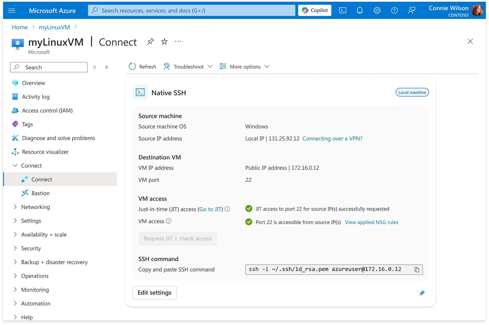
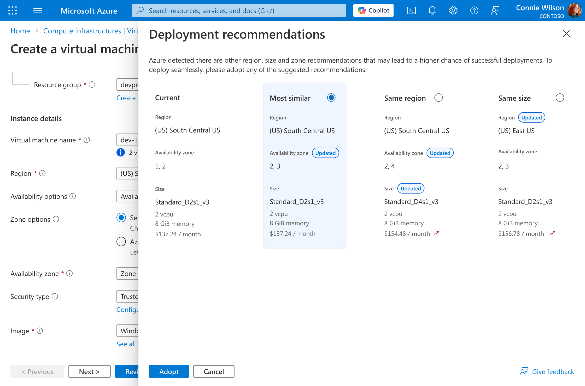
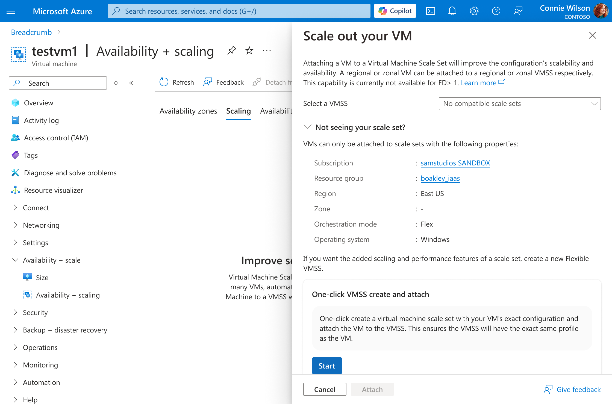

Hello, I am Aimee Wu
a product designer focused on enterprise and cloud B2B platforms, simplifying complex technical systems through research-driven, logical design.
Here's a selection of my work. Dive deeper into any project, or use the prompts below to learn more about my work, background, and approach 🤝

Microsoft Azure
Connect to virtual machine
Transformed VM connection from a reactive, failure-prone experience into a proactive access-readiness system.

Microsoft Azure
Capacity recommender
Designed a capacity recommendation system that surfaces viable region and size combinations before failure.

Microsoft Azure
VMSS create for VM attachment
Redesigned the path from single VM to scale set into a compatibility-guaranteed Quick Create flow.
Prompts